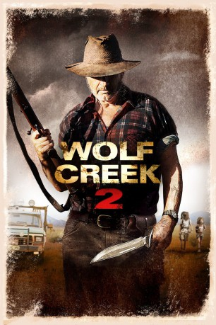

#4200 Wolf Creek 2
 
 IMDB-Wertung: 6.1 / 10
IMDB-Wertung: 6.1 / 10  Metascore: 0
Metascore: 0 
Die Rucksacktouristen Rutger, Katarina und der Surfer Paul wollen den berühmten Meteoritenkrater "Wolf Creek" besuchen. Doch der Ausflug in das australische Outback wird für die Freunde zum Horrortrip, das weite Ödland erneut Schauplatz eines erbarmungslosen Amoklaufs des Psychopathen Mick Taylor - dem so ziemlich letzten Menschen, dem man im Urlaub begegnen möchte. Die Backpacker versuchen zu fliehen, doch Mick verfolgt sie in einer nervenaufreibenden Jagd durch die verlassene Einöde. Es scheint aussichtlos, den Mann, der schon so viele Leben auf dem Gewissen hat, aufzuhalten. Um zu überleben, was bisher niemand überlebt hat, müssen die Freunde die Grenzen der Menschlichkeit hinter sich lassen und selbst zu gewissenlosen Monstern werden...
Jahr: 2013
Dauer: 106 Minuten
FSK: 18
Land: Australien Studio: New KSMTonspuren: DTS - ,
Untertitel: Deutsch,
Auflösung: 1080p (1920x816) Größe: 5345 MB
Genre: Horror
Regisseur: Greg McLean
Drehbuch: Joseph Howard
Soundtrack:
Darsteller:
 John Jarratt als Mick Taylor
John Jarratt als Mick Taylor Ryan Corr als Paul Hammersmith
Ryan Corr als Paul Hammersmith- Shannon Ashlyn als Katarina Schmidt
- Philippe Klaus als Rutger Enqvist
- Shane Connor als Snr. Sergeant Gary Bulmer Jnr
- Ben Gerrard als Constable Brian O'Connor
- Chloé Boreham als French Girl #2
- Maria Volk als American Girl
- Sarah Roberts als English Girl #1
- Jordan Cowan als Young Woman in Lair
- Aaron Sterns als Outback Cop #1
- Carrie Daniel als Hippy #2
- Gerard Kennedy als Jack
- Annie Byron als Lil
- Lucy Bayet als French Girl #1
- Sebastian Freeman als French Guy
- Ryan Clarke als English Dude
- Thomas Green als American Dude
- Kate Englefield als English Girl #2
- Nic English als Irish Guy
- Maarten Rikken als Canadian Guy
- Jake Phillips als Cute 20s Guy #1
- Pat Wundke als Cute 20s Guy #2
- Alison Oetjen als Cute 20s Girl #1
- Tessa Boehm als Cute 20s Girl #2
- Trish Willoughby als Grey Nomad
- Brian Willoughby als Grey Nomad
- Irene Morgan als Local Kid #1
- Cassie Morgan als Local Kid #2
- Gerald Morgan als Local Kid #3
- Daniel Haggerty als Hippy #1
- Eddie White als Happy Camper
- Lenny Hubbard als Happy Camper
- Zev Eleftheriou als Helpful Motorist
- Jacquy Phillips als Lady Goat Farmer
- Graham Jahne als Friendly Truck Driver
- Peter Hearn als Family at Crater
- Kellie Hearn als Family at Crater
- Caleb Hearn als Family at Crater
- Lachlan Hearn als Family at Crater
- Ian Carpenter als Dead Truck driver
- Emma Noble als Dead Body #1
- Megan Brooks als Deady Body #2
- Grant Watkins als Male Detective #1
- Lin Heesom als Male Detective #2
- Shane Evans als Police Officer #1
- Ben Edwards als Police Officer #2
- Dan Sims als Police Officer #3
- Tanya Harris als Female Police Officer
- Mark Richmond als Forensics #1
Datei: X:\FSK18-Collections\Wolf Creek\Wolf Creek 2 (2013, FSK18, 1920x816).mkv seit 29.07.2016
Festplatte: FSK18
 Alle Filme aus Gruppe 'FSK18-Collections\Wolf Creek'
Alle Filme aus Gruppe 'FSK18-Collections\Wolf Creek'